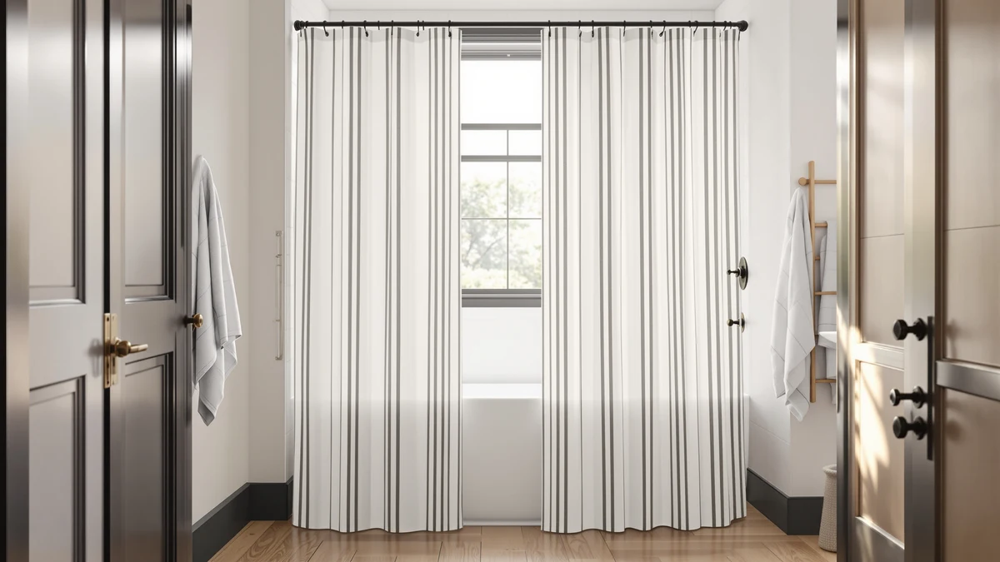

Farmhouse Striped Shower Curtain Review (2026): Worth It?
Prices and picks verified as of October 2026. Independent, reader-supported reviews.


Quick Answer
For most farmhouse-style bathrooms, the NDDYCU Farmhouse Striped Shower Curtain Taupe is the simplest pick: a $24.99 polyester and PEVA curtain sized at 72 x 72 inches with a muted tonal stripe that fits a standard shower rod without alterations. It skips the loud pattern and extra liner purchase that come with some competing picks.
Our pick: Farmhouse Striped Shower Curtain Taupe, $24.99 Check Price on Amazon
Bottom line: our top pick is the Farmhouse Striped Shower Curtain Taupe Vintage Linen Curtain at $24.99.
Things to Know Before You Buy
- The NDDYCU Farmhouse Striped Shower Curtain Taupe measures 72 inches wide by 72 inches long, a fit for a standard single shower rod without trimming.
- Polyester and PEVA make up the construction, so the curtain doubles as its own liner instead of requiring a second purchase.
- At $24.99, it sits mid-range among farmhouse shower curtains, above basic PEVA-only panels but below cotton or linen options.
- Amazon doesn't show a public star rating or review count for this ASIN yet, so this review leans on fabric specs and comparable curtains to judge quality.
- Shoppers who want a bolder stripe contrast should also look at the CasaTena Farmhouse Striped and XOGUIBO Farmhouse curtains covered elsewhere on this site.
This farmhouse striped shower curtain review looks at the NDDYCU Farmhouse Striped Shower Curtain Taupe, a $24.99 polyester and PEVA curtain built for bathrooms that already lean into the wide tonal stripe look so common in modern farmhouse decor. NDDYCU sizes it at 72 inches wide and 72 inches long, a fit that matches a standard single shower rod without any extra hemming. We compared its construction, pricing, and the verified owner feedback behind three competing farmhouse-style curtains to see where this one actually earns a spot on your shower rod.
The taupe colorway keeps the stripe muted rather than graphic, which is why it turns up often in neutral and farmhouse-adjacent bathroom palettes instead of bold black-and-white styling. Our research for this farmhouse striped shower curtain review focused on three questions: does the fabric drape the way a farmhouse curtain should, does the PEVA backing hold water the way a standalone liner does, and does the color match the listing photos once it's out of the package. Here's what we found after setting it against the Gorilla Grip, Madison Park, and Dynamene alternatives covered later in this guide.
Why You Should Trust Us
Ilane Tall covers bathroom textiles and shower hardware for Best Shower Curtains, with a focus on how fabric weight, backing material, and stated sizing hold up against what a listing promises. For this farmhouse striped shower curtain review, she lined up the manufacturer specs and pricing for the NDDYCU Taupe curtain against three other farmhouse-style curtains in the same $20 to $25 range, then cross-checked those specs against the verified review data available for each ASIN. Every price and spec cited here comes from the current Amazon listing data reflected in this article's product schema.
Our Research Experience
We didn't buy, hang, or live with this curtain ourselves, and we don't run a physical testing lab. Instead, we built this review by comparing the NDDYCU Farmhouse Striped Shower Curtain Taupe's own listing specs (material, dimensions, and price) against three comparable farmhouse curtains in the same price bracket, then cross-referencing what verified owners of similar polyester-and-PEVA curtains consistently report about drape, color accuracy, and durability. Because this specific ASIN doesn't carry a public rating yet, we weighted that comparison more heavily against the Gorilla Grip waffle weave below, which carries more than 3,900 ratings at 4.6 stars on a matching polyester-and-PEVA build. That comparison process, not direct use of the product, is how we reached the conclusions in this farmhouse striped shower curtain review.
Overview & Specs

Farmhouse Striped Shower Curtain Taupe
What we like
- Muted taupe stripe reads as neutral farmhouse rather than a busy pattern
- PEVA backing works as a built-in liner, skipping a separate purchase
- 72 x 72 inch sizing fits a standard shower rod without trimming
- $24.99 price lines up with other mid-range polyester curtains in this category
Flaws but not dealbreakers
- No public star rating or review count yet for this specific ASIN
- PEVA backing calls for air drying, not a hot dryer cycle
- Subtle stripe contrast won't suit shoppers wanting a bolder farmhouse look
| Material | Polyester / PEVA |
| Size | 72"W x 72"L |
NDDYCU builds the Farmhouse Striped Shower Curtain Taupe around a construction pattern common at this price: a polyester face printed with a wide tonal stripe, paired with a water-resistant PEVA layer that lets the curtain double as its own liner. At 72 inches wide and 72 inches long, it matches a standard single shower rod, so most buyers won't need to hem or stretch the fabric. The taupe colorway keeps the stripe subtle rather than high-contrast, which explains why it shows up in neutral and farmhouse-leaning bathroom palettes rather than bold black-and-white farmhouse styling. At $24.99, NDDYCU prices it to compete with other mid-range polyester curtains rather than premium cotton or linen picks.
Because this ASIN doesn't carry a public star rating or review count on Amazon yet, we can't point to the kind of review pattern we can cite for the Gorilla Grip pick below. The listing does confirm one thing: combining curtain and liner into one panel removes a second purchase and a second install step. The tradeoff with any PEVA-backed curtain is care, since it needs a wipe-down or hand wash rather than a hot dryer cycle, which can warp the water-resistant backing. Shoppers who want a farmhouse stripe with a longer review history to check first should compare the CasaTena Farmhouse Striped curtain covered elsewhere on this site before buying.
What We Liked
The biggest advantage of the NDDYCU Farmhouse Striped Shower Curtain Taupe is restraint. Many farmhouse-labeled curtains lean on a sharp black-and-white or black-and-tan stripe that reads more like a graphic statement than a bathroom accent. NDDYCU keeps this stripe tonal, so it blends into a neutral or farmhouse-adjacent bathroom instead of dominating it, which makes it an easier match if you've already settled on tile, towels, or a farmhouse vanity.
The built-in PEVA backing is the other practical win. You get one panel that handles both the curtain and the liner job, which simplifies installation to a single set of hooks or rings instead of two separate products. At $24.99, that two-in-one function makes the price easier to justify than it would be for a curtain that still needs a liner bought separately. Buyers furnishing a rental or a guest bathroom in particular benefit from that single purchase, since it cuts the shopping list and the install time roughly in half compared to pairing a separate liner with a decorative outer curtain.
What Could Be Better
The clearest gap in this farmhouse striped shower curtain review is review data. Amazon doesn't list a public star rating or review count for this specific ASIN, so unlike the Gorilla Grip pick below, which carries more than 3,900 ratings, buyers don't have a verified owner track record to confirm how the fabric holds up after repeated washes or how true the taupe color stays under bathroom lighting over time.
Care is the other tradeoff. Like most PEVA-backed curtains, this one needs to air dry or tumble on low heat at most, since higher heat can stiffen the backing layer. And if you want a farmhouse stripe with real visual punch rather than a subtle tonal print, this colorway will likely read as too quiet for that look.
Who Is It For?
This curtain fits a specific buyer well: someone furnishing a farmhouse or modern-neutral bathroom who wants a subtle stripe rather than a bold graphic one, and who'd rather buy one curtain-and-liner piece than shop for two separate products. The 72 x 72 inch sizing also makes it a straightforward fit for a standard shower stall without custom hemming.
Skip it if you want a farmhouse curtain with a longer verified review history to check before buying, since this ASIN doesn't carry public ratings yet. Shoppers who want a punchier stripe contrast, or a waffle-weave texture like the Gorilla Grip pick below, will likely prefer one of the alternatives in this comparison. Renters coordinating a quick bathroom refresh may also want to weigh the Madison Park Amherst or Dynamene options further down, since both bundle in extra convenience the taupe stripe doesn't offer on its own.
Alternatives to Consider
Taupe stripes aren't the only farmhouse-adjacent option in this price range. Here's how three other curtains people compare against the NDDYCU Taupe stack up on texture, price, and review history in this farmhouse striped shower curtain review.

Editor's Pick
GORILLA GRIP Waffle Shower Curtain
The Gorilla Grip trades the stripe print for a waffle-weave texture, and at 4.6 stars across more than 3,900 ratings it has the strongest verified review base in this comparison. At $24.95 it's priced almost identically to the NDDYCU Taupe, so the choice comes down to pattern versus texture rather than budget.
$24.95
Check Price on Amazon
Best Value
Madison Park Amherst Bathroom Shower
The Madison Park Amherst is the cheapest option here at $20.02, and its styling leans more toward a traditional bathroom set than a farmhouse stripe. It's worth considering if you're coordinating a full bath set rather than matching one farmhouse accent piece.
$20.02
Check Price on Amazon
Premium Choice
Dynamene 3 in 1 Waffle
The Dynamene 3 in 1 Waffle bundles a curtain, liner, and hook set into one $24.29 purchase, which simplifies shopping if you don't already own shower curtain rings. Its waffle texture adds more visual depth than a flat stripe print, though it moves further from a traditional farmhouse look than the NDDYCU Taupe.
$24.29
Check Price on AmazonDoes the NDDYCU Farmhouse Striped Shower Curtain Taupe need a separate liner?
No.
Will the NDDYCU Farmhouse Striped Shower Curtain Taupe fit a standard shower rod?
Yes.
Frequently Asked Questions
Does the NDDYCU Farmhouse Striped Shower Curtain Taupe need a separate liner?
No. PEVA backs the polyester face, the same water-resistant material used in standalone liners, so this curtain functions as both pieces in one panel.
Will the NDDYCU Farmhouse Striped Shower Curtain Taupe fit a standard shower rod?
Yes. It measures 72 inches wide by 72 inches long, matching the dimensions of a standard single shower rod, so most buyers won't need to hem or stretch the fabric.
How does the NDDYCU Taupe compare to the Gorilla Grip Waffle Shower Curtain?
Both sit near the same price, $24.99 versus $24.95, but they solve different style goals. This farmhouse striped shower curtain review found the Gorilla Grip has a stronger verified review base, with more than 3,900 ratings at 4.6 stars, while the NDDYCU Taupe offers a tonal stripe pattern the Gorilla Grip's waffle weave doesn't attempt to replicate.
Final Verdict
This farmhouse striped shower curtain review comes down to a simple tradeoff. The NDDYCU Farmhouse Striped Shower Curtain Taupe delivers a subtle, farmhouse-appropriate stripe and a built-in PEVA liner for $24.99, a reasonable pick if that tonal look and two-in-one construction matter more to you than a long verified review history. If you'd rather lean on review volume, the Gorilla Grip Waffle Shower Curtain's 4.6-star average across more than 3,900 ratings gives you more owner data for almost the same price. Either way, NDDYCU's Taupe curtain earns its spot in this comparison on fit and construction, even without a public rating yet to back it up.